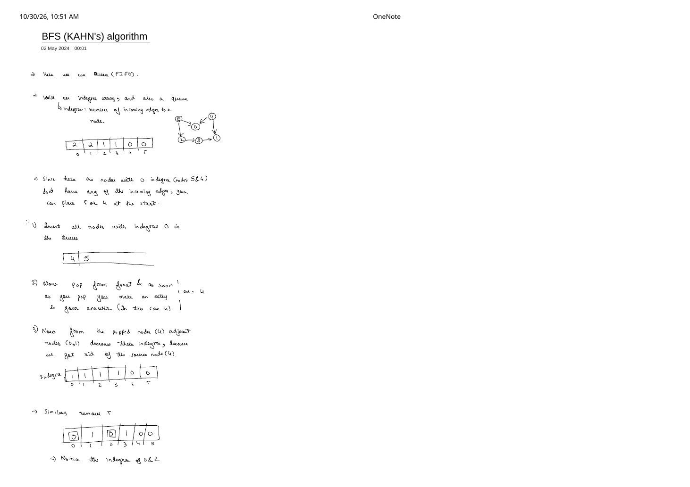
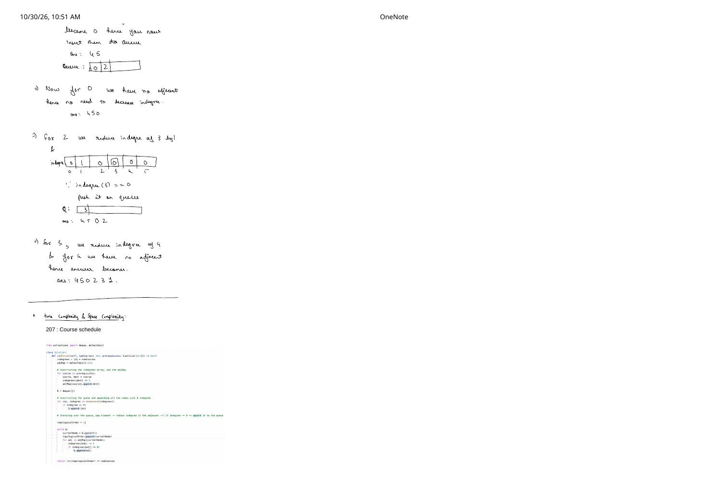
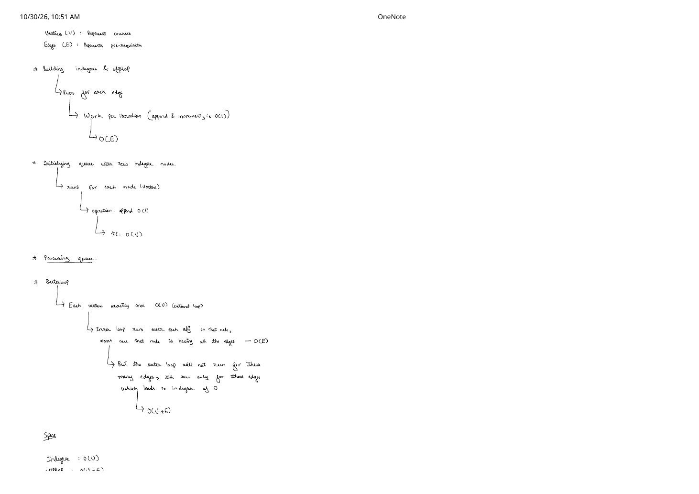

Part 2: Kahn's BFS Algorithm, Indegree Peeling & Course Schedule (LC 207)
Expanded from handwritten competitive coding study notes (02_BFS_KAHN_s_algorithm.pdf, Pages 1–4) · View original handwritten pages
1. Core Intuition: Zero-Indegree Source Peeling
Whereas DFS Topological Sort works from the sinks backward via a post-order stack, Kahn's Algorithm (1962) builds the topological order directly from left to right using a FIFO Queue and an indegree array:
Indegree & The Zero-Prerequisite Invariant
The indegree of vertex $v$, written $\deg^-(v)$, is the number of incoming directed edges $u \to v$. Every finite non-empty DAG has at least one vertex with $\deg^-(v) = 0$ (otherwise walking backward against incoming edges forever on a finite set of $V$ vertices would visit some vertex twice, forming a cycle!). Any vertex with indegree == 0 has zero unresolved prerequisites, so it can safely be placed next in our answer—and deleting it reduces the remaining indegree of each of its outgoing neighbors by $1$.
- Compute
indegree[v]for all $v \in \{0, \dots, V-1\}$ by scanning every directed edge $u \to v$ and incrementingindegree[v]++. - Push every vertex initially having
indegree[v] == 0into FIFO queue $Q$. - Pop
u = Q.front()and immediately appendutotopoOrder. - For each outgoing neighbor $v \in \text{adj}[u]$, decrement
indegree[v]--("getting rid of source node $u$"). The exact momentindegree[v]hits0, push $v$ into $Q$. Repeat steps 3–4 until $Q$ is empty.
2. Complete Handwritten Dry Run on the 6-Vertex DAG
On our benchmark 6-vertex DAG with edges 5 → 0, 4 → 0, 5 → 2, 2 → 3, 4 → 1, 3 → 1, counting incoming arrows per vertex gives the initial indegree array:
node: 0 1 2 3 4 5indegree: [2, 2, 1, 1, 0, 0] ← Nodes 4 and 5 have $0$ incoming edges, so $Q = [4, 5]$.
| Step | Popped Node | Edge Relaxations (indegree[nbr]--) |
indegree[0..5] |
Queue $Q$ (Front $\to$ Back) | ans So Far |
|---|---|---|---|---|---|
| Init | — | Enqueue all indegree == 0 nodes (4, 5) |
[2, 2, 1, 1, 0, 0] |
[4, 5] |
[] |
| 1 | 4 |
Decrement 0 ($2 \to 1$) and 1 ($2 \to 1$); neither is $0$ |
[1, 1, 1, 1, 0, 0] |
[5] |
[4] |
| 2 | 5 |
Decrement 0 ($1 \to \mathbf{0}$) and 2 ($1 \to \mathbf{0}$) → enqueue 0, 2 |
[0, 1, 0, 1, 0, 0] |
[0, 2] |
[4, 5] |
| 3 | 0 |
No outgoing neighbors | [0, 1, 0, 1, 0, 0] |
[2] |
[4, 5, 0] |
| 4 | 2 |
Decrement 3 ($1 \to \mathbf{0}$) → enqueue 3 |
[0, 1, 0, 0, 0, 0] |
[3] |
[4, 5, 0, 2] |
| 5 | 3 |
Decrement 1 ($1 \to \mathbf{0}$) → enqueue 1 |
[0, 0, 0, 0, 0, 0] |
[1] |
[4, 5, 0, 2, 3] |
| 6 | 1 |
No outgoing neighbors; queue empty! | [0, 0, 0, 0, 0, 0] |
[] |
[4, 5, 0, 2, 3, 1] |
3. LeetCode 207 & 210: Course Schedule Implementation
In LeetCode 207 (Course Schedule), prerequisites[i] = [course, prereq] means you must finish prereq before taking course (directed edge $\text{prereq} \to \text{course}$). Every course can be completed if and only if the prerequisite graph is a DAG—which Kahn's algorithm verifies in a single line at the end: return len(topologicalOrder) == numCourses!
# LeetCode 207: Course Schedule — Python (Kahn's BFS with deque)
from collections import deque, defaultdict
class Solution:
def canFinish(self, numCourses: int, prerequisites: List[List[int]]) -> bool:
indegrees = [0] * numCourses
adjMap = defaultdict(list)
# Edge prereq -> course (Note: for pure boolean cycle detection in LC 207,
# reversing all edges also preserves cycle existence, but prereq -> course
# simultaneously gives the exact valid order for LC 210 Course Schedule II!)
for course, prereq in prerequisites:
adjMap[prereq].append(course)
indegrees[course] += 1
Q = deque(idx for idx, deg in enumerate(indegrees) if deg == 0)
visited_count = 0
while Q:
curr = Q.popleft()
visited_count += 1
for adj in adjMap[curr]:
indegrees[adj] -= 1
if indegrees[adj] == 0:
Q.append(adj)
return visited_count == numCourses// Kahn's BFS Topological Sort + Cycle Guard (LC 210 Course Schedule II) — C++
vector<int> findOrder(int numCourses, const vector<vector<int>>& prerequisites) {
vector<vector<int>> adj(numCourses);
vector<int> indegree(numCourses, 0);
for (const auto& p : prerequisites) {
int course = p[0], prereq = p[1];
adj[prereq].push_back(course);
indegree[course]++;
}
queue<int> q;
for (int i = 0; i < numCourses; ++i) {
if (indegree[i] == 0) q.push(i);
}
vector<int> topo;
topo.reserve(numCourses);
while (!q.empty()) {
int u = q.front();
q.pop();
topo.push_back(u);
for (int v : adj[u]) {
if (--indegree[v] == 0) {
q.push(v);
}
}
}
// If a cycle prevented some nodes from reaching indegree 0, return {}
return ((int)topo.size() == numCourses) ? topo : vector<int>{};
}4. Detailed Amortized Time & Space Proof (Pages 3–4 of Notes)
A common interview question—worked out step-by-step on pages 3 and 4 of the handwritten notes—is why the nested while (!q.empty()) + for (int v : adj[u]) loop runs in $\mathcal{O}(V + E)$ rather than $\mathcal{O}(V \cdot E)$:
Phase-by-Phase Runtime Breakdown ($V$ = courses/vertices, $E$ = prerequisites/edges)
- Building
adjMap&indegree[]: Iterates once per prerequisite edge, doing $\mathcal{O}(1)$ append + increment $\implies \mathcal{O}(E)$. - Seeding queue $Q$ with zero-indegree nodes: Scans all $V$ vertices once with $\mathcal{O}(1)$ check/push $\implies \mathcal{O}(V)$.
- Processing queue $Q$ (Amortized Edge Counting):
- A vertex enters $Q$ only at the unique instant its
indegreetransitions to $0$, so the outerwhileloop pops each vertex at most once ($\le V$ iterations). - Although a single hub vertex could own up to $E$ outgoing edges in the worst case, the inner
forloop across all outer iterations scans $\sum_{u \in V} \deg^+(u) = E$ edges in total!
- A vertex enters $Q$ only at the unique instant its
Total Time Complexity: $\mathcal{O}(E) + \mathcal{O}(V) + \mathcal{O}(V + E) = \mathbf{\mathcal{O}(V + E)}$.
Space Complexity: indegree $\mathcal{O}(V)$ + adjMap $\mathcal{O}(V + E)$ + Queue $\mathcal{O}(V)$ + topologicalOrder $\mathcal{O}(V) = \mathbf{\mathcal{O}(V + E)}$ ($\mathcal{O}(V)$ auxiliary if adjacency list is already provided).
From the Handwritten Notes
Expand the original handwritten pages below to inspect the exact derivations, dry runs, and annotations:
View original note — Kahn's BFS Algorithm: Indegree Setup & Dry Run Steps 1–4 (Page 1)


indegree = [2, 2, 1, 1, 0, 0] setup, seeding [4, 5], and popping 4 then 5.View original note — Kahn's BFS Algorithm: Dry Run Completion (4 5 0 2 3 1) & LC 207 Code (Page 2)


4 5 0 2 3 1, plus Python deque solution for LeetCode 207 Course Schedule.View original note — Kahn's BFS Algorithm: Phase-by-Phase $\mathcal{O}(V + E)$ Time Proof (Page 3)

